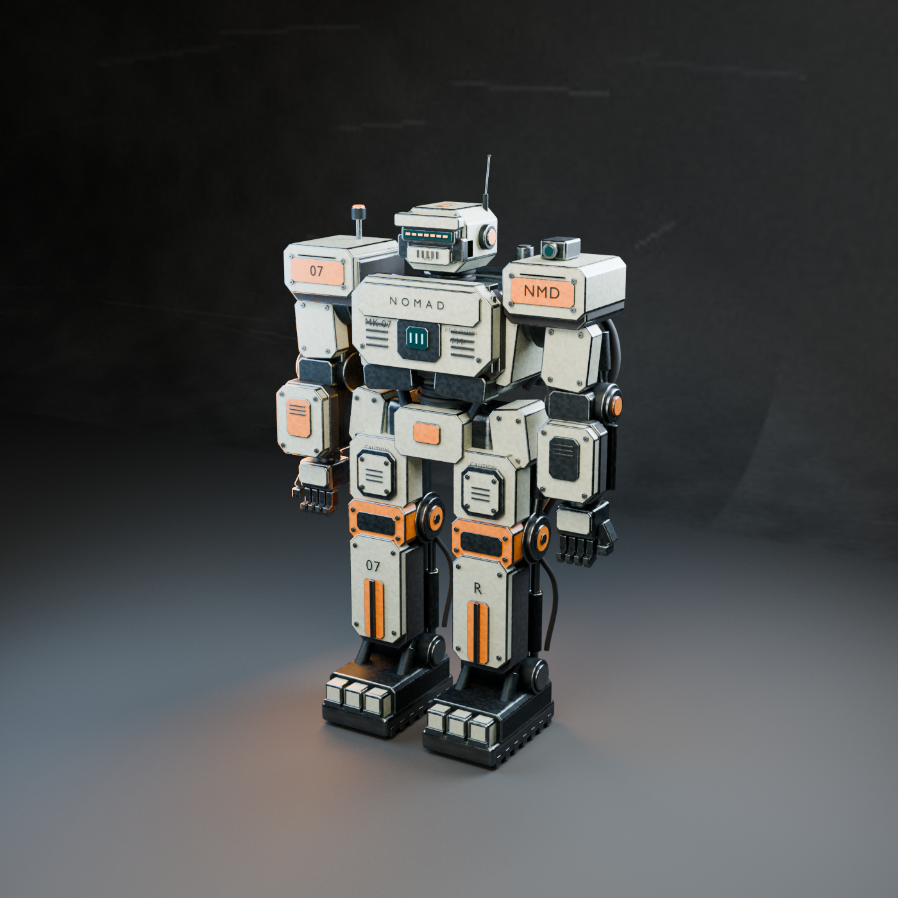
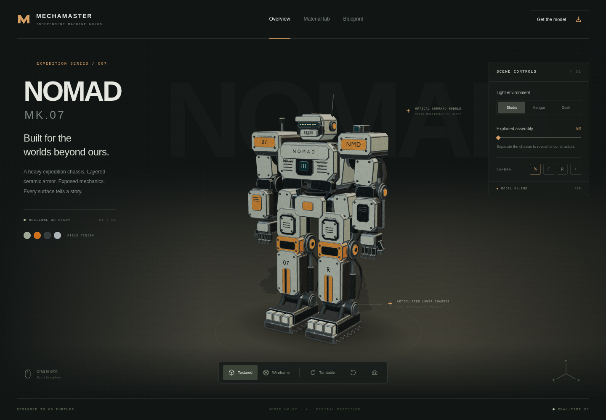
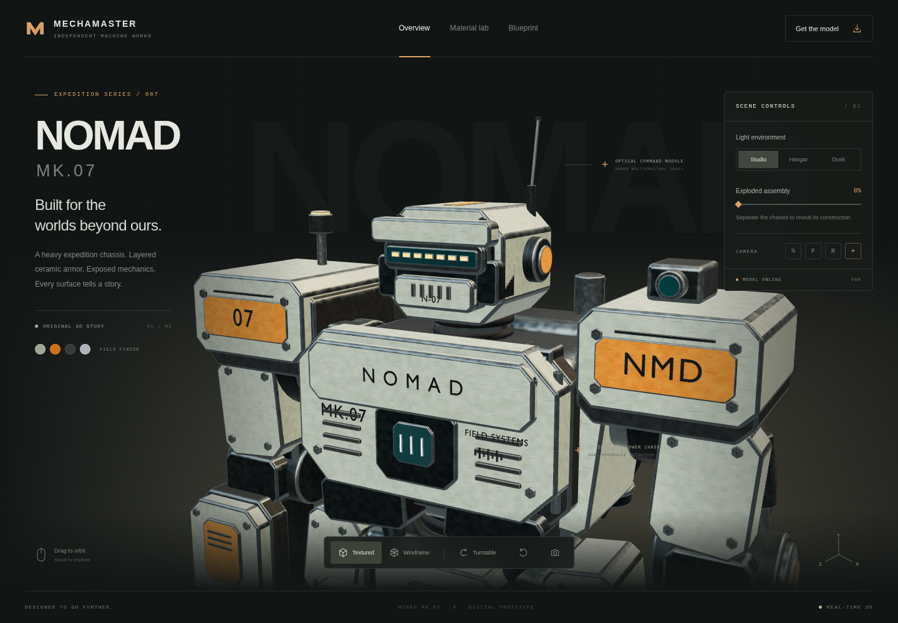
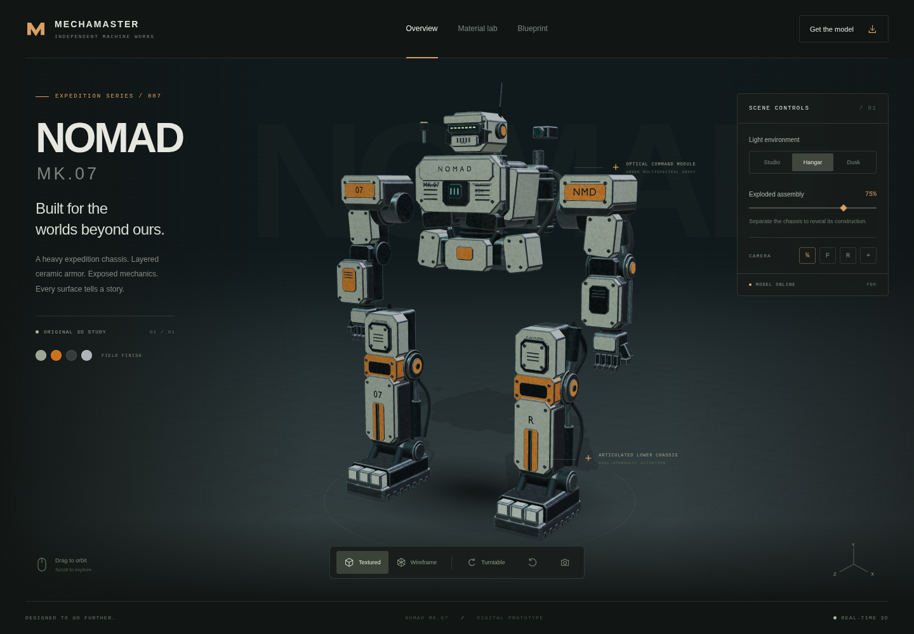
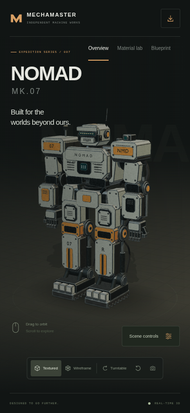

NOMAD — original renders
nomad-hero.png · 3,000,241 bytes Download PNG
viewer-desktop.png · 701,075 bytes Download PNG
viewer-detail.png · 982,427 bytes Download PNG
viewer-exploded.png · 741,242 bytes Download PNG
viewer-mobile.png · 225,417 bytes Download PNG